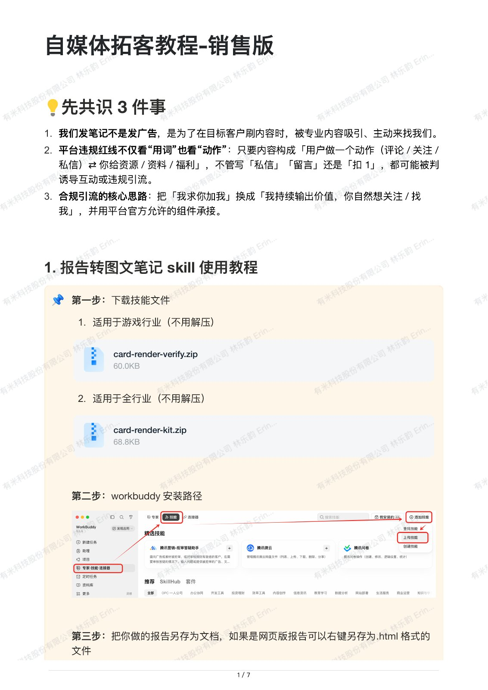
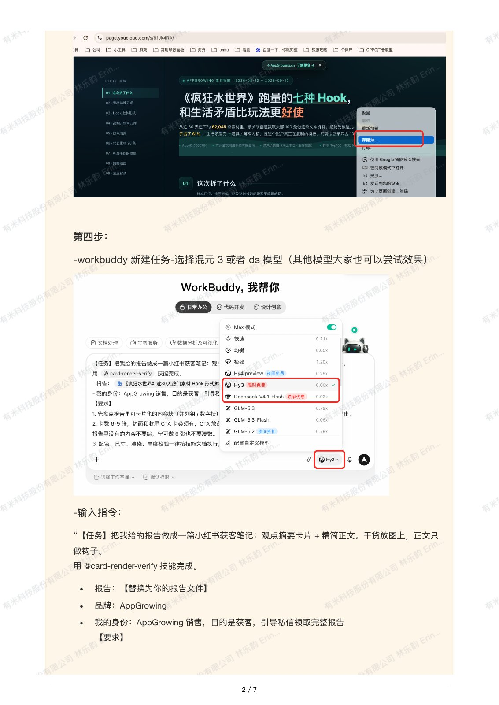
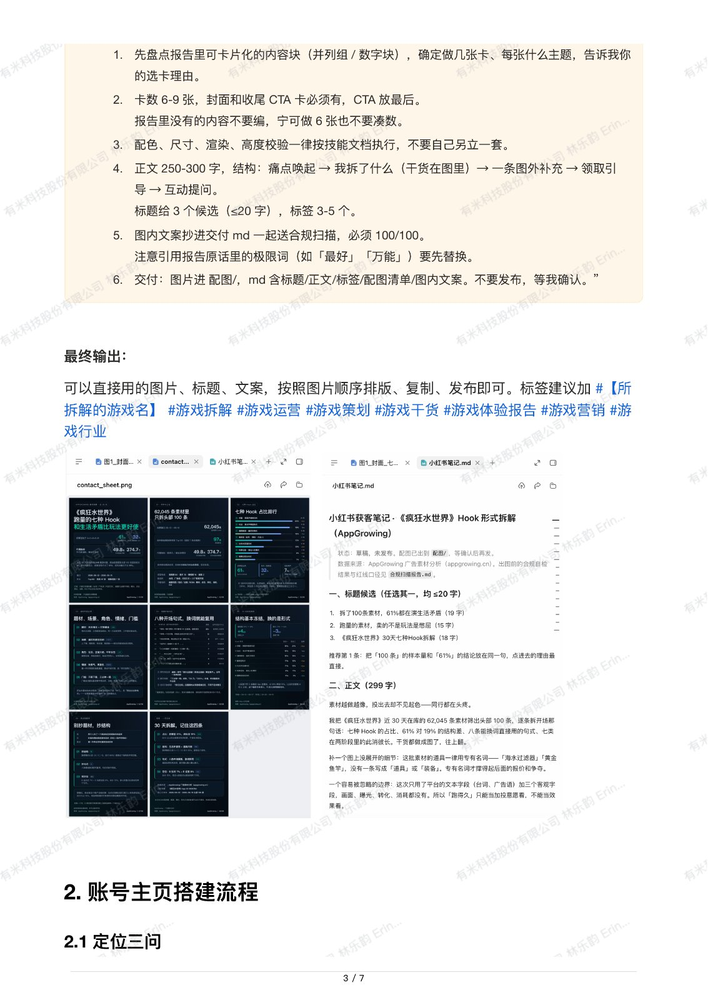
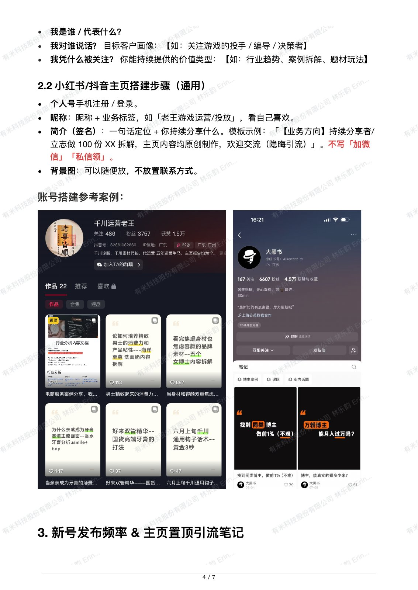
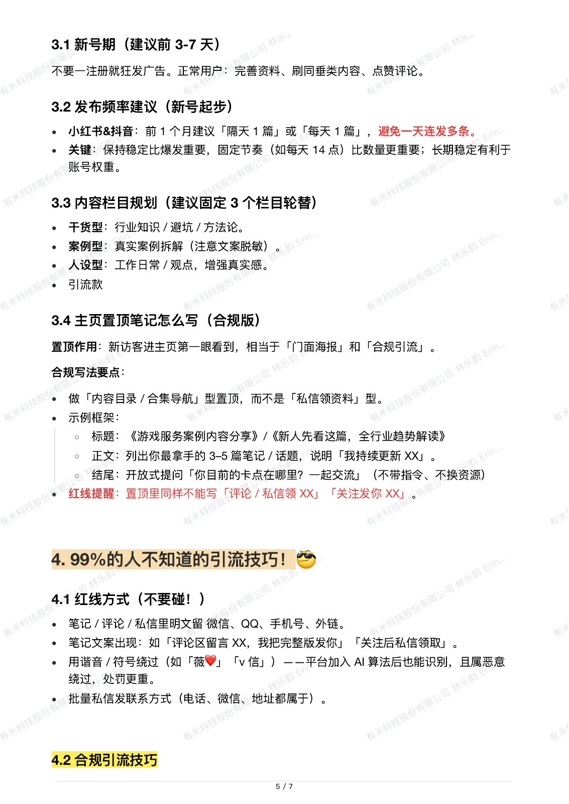
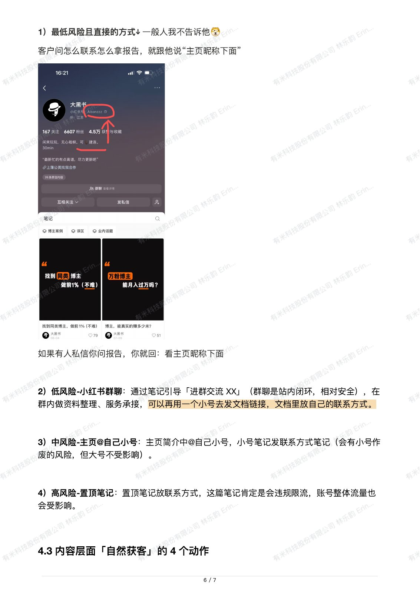
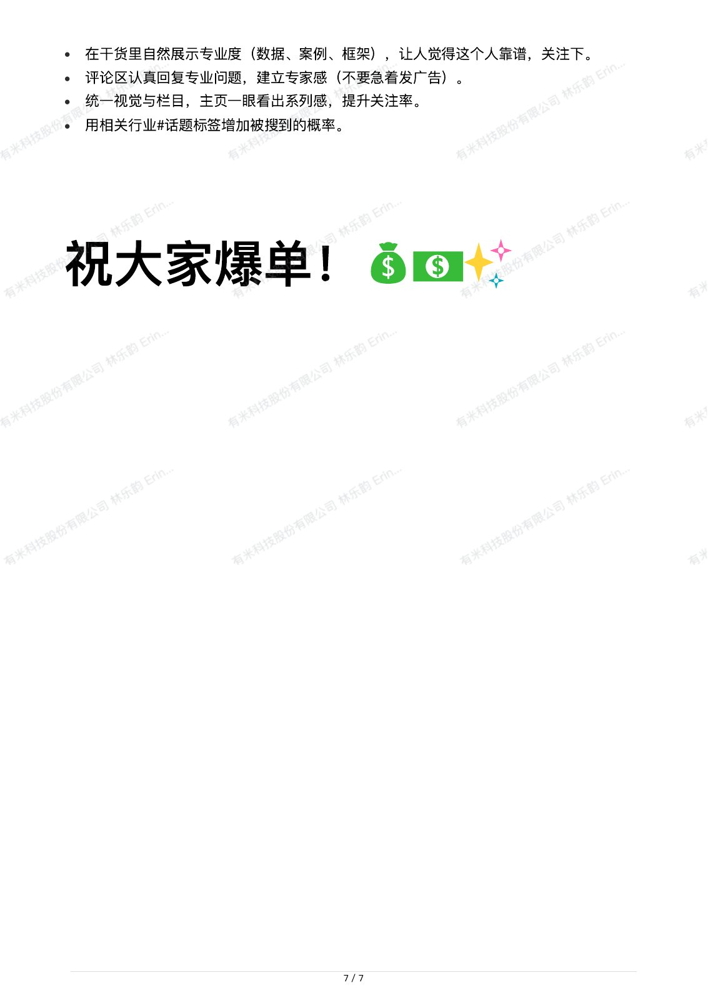

← 返回作品集
下载原 PDF ↓
自媒体拓客教程 · 销售版
完整文档 · 7 页
跳至
第 1 页
第 2 页
第 3 页
第 4 页
第 5 页
第 6 页
第 7 页
第 1 页 / 共 7 页

第 2 页 / 共 7 页

第 3 页 / 共 7 页

第 4 页 / 共 7 页

第 5 页 / 共 7 页

第 6 页 / 共 7 页

第 7 页 / 共 7 页
